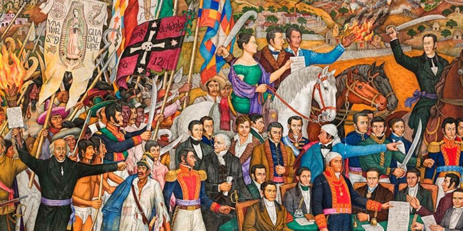
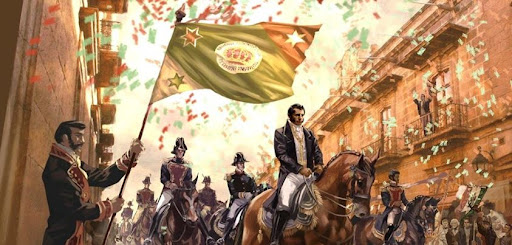
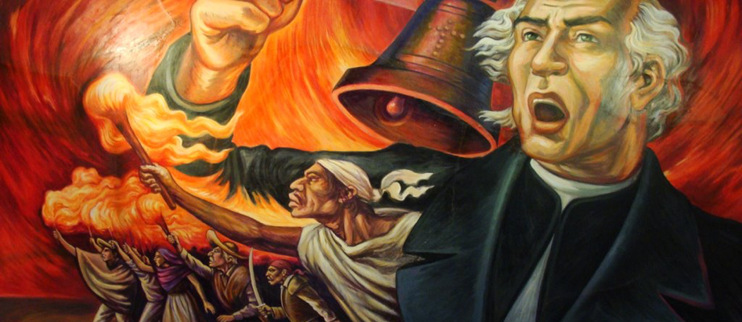
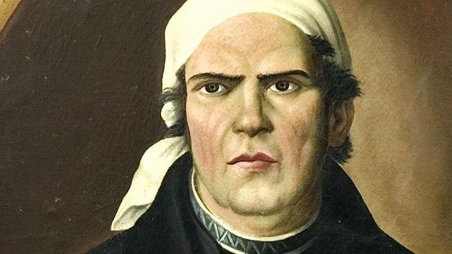
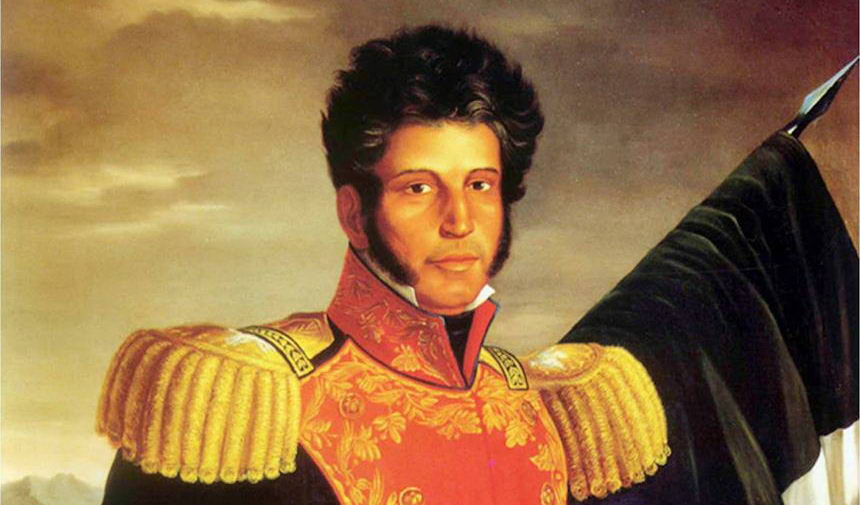
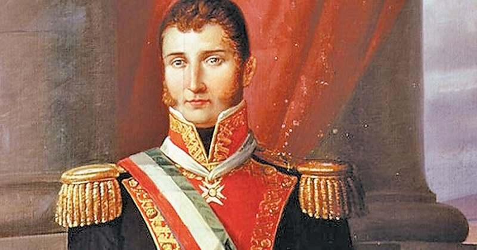

Todos los mexicanos sabemos que el 16 de septiembre se conmemora la Independencia de México. Pero, realmente todos sabemos ¿qué fue, qué ocurrió, cómo empezó o cómo terminó? La Independencia de México fue la consecuencia de un proceso político y social resuelto con las armas, que puso fin al dominio español en los territorios de la entonces llamada Nueva España. Esta comenzó el 16 de septiembre de 1810, estallando en una revolución social de la cual nacería nuestro país como una Nación independiente, libre y soberana. Fue una masiva revolución popular, en la que decenas de miles de indígenas, de afrodescendientes, de mulatos, de mestizos, campesinos, mineros y rancheros, hombres y mujeres, engrosaron las filas insurgentes siguiendo al llamado del cura Miguel Hidalgo y Costilla y, unos cuantos meses después, conformaron un ejército que hirió de muerte al régimen colonial y desmanteló un sistema social opresivo y excluyente. La lucha encabezada por Hidalgo y continuada por José María Morelos fue un movimiento libertario y justiciero.
Empezó la madrugada del 16 de septiembre de 1810, cuando el padre Miguel Hidalgo dió el llamado “Grito de Dolores” y terminó el 27 de septiembre de 1821 con la entrada triunfal del Ejército Trigarante, encabezado por Agustín de Iturbide y Vicente Guerrero, a una jubilosa Ciudad de México. Obteniendo así una duración de 11 años.
También conocido como "El Padre de la Patria", Miguel Hidalgo fue un insurgente y sacerdote mexicano. Nació el 8 de mayo de 1753 en una hacienda de Guanajuato, en el seno de una familia criolla y de clase alta. Cursó estudios en el Colegio de San Nicolás, Valladolid (actual Morelia), del que llegó a ser rector. En 1778, fue ordenado sacerdote y en 1803 se hizo cargo de la parroquia de Dolores, Guanajuato. El 16 de septiembre de 1810, llevando como estandarte a la virgen de Guadalupe, y gritando: "Viva la Religión, viva Nuestra Madre Santísima de Guadalupe, Viva Fernando VII, Viva La América y muera el mal gobierno"; inició la gesta independentista. El 11 de enero de 1811, Hidalgo fue derrotado cerca de Guadalajara por las fuerzas realistas. Escapó hacia el norte, pero fue capturado y condenado a muerte. Murió el 30 de julio de 1811 en Chihuahua.
José María Morelos y Pavón fue un sacerdote, militar y político novohispano. Nació el 30 de septiembre de 1765 en Valladolid (actual Morelia). Estudió en el Seminario de Valladolid y se graduó en Artes de la “Real y Pontificia Universidad de México”, de ahí empezó a ejercer como cura en varios pueblos de Michoacán (1798). En 1810, durante la guerra de independencia, se incorporó a las filas de Miguel Hidalgo, quien lo nombró jefe de los insurgentes del sur de México. Tras la muerte de este en 1811, Morelos conquistó la mayor parte del sur y centro del país, para por fin tomar Oaxaca. Tras varias capturas militares, Morelos fue aprendido en noviembre de 1815. Finalmente fue condenado por herejía y traición y fusilado el 22 de diciembre de 1815 en Ecatepec.
Vicente Guerrero fue un político y militar mexicano de origen indígena y afromexicano, que se desempeñó como presidente de México. Nació el 9 de agosto de 1782 en Tixtla (actual Guerrero). Trabajó como arriero y se dedicó a las labores del campo hasta que el movimiento de independencia llamó su atención, viendo en él la posibilidad de luchar por un mundo más justo y libre para el pueblo de una Nueva España clasista y racista. José María Morelos reconoció sus méritos y valentía, y lo nombró capitán, ordenándole instruirse en el manejo de las armas, la fabricación de pólvora y las estrategias de guerra. Cuando Morelos fue fusilado en 1815, Vicente Guerrero se mantuvo en pie de guerra y rechazó los ofrecimientos de indulto. En 1821, el Guerrero, después de 11 años de guerra, vió condiciones propicias para concluir el proceso independentista e inició comunicaciones con los jefes realistas para acordar la pacificación del país. Entre ellos estaba Agustín de Iturbide; su alianza dio origen al Ejército Trigarante o de la Tres Garantías, y colocó al movimiento independentista bajo tres principios regentes: religión, independencia y unión de todos los mexicanos. Después de encontrarse en Córdoba, Veracruz, con el recién llegado virrey Juan O’Donojú y firmar los tratados que dieron por terminada la guerra independentista, en septiembre de ese año, al mando de aquel ejército Iturbide entró triunfalmente en la capital. después de ser traicionado y custodiado, se enfrentó a un juicio en el cual no le dejaron defenderse, se le acusó de rebelión y usurpación. Y, finalmente fue fusilado el 14 de febrero de 1831 en Cuilápam, Guerrero.
Agustín de Iturbide fue un militar y político mexicano que se desempeñó como emperador de México. Nació el 27 de septiembre de 1783 en el Virreinato de Nueva España. Iturbide dejó muy pronto sus estudios en el seminario de su población natal para enrolarse en el ejército realista a la edad de catorce años. Con la captura y ejecución en 1815 del sucesor de López Rayón, José María Morelos, la sublevación independentista pareció definitivamente sofocada; quedaba únicamente como cabeza visible Vicente Guerrero, que se replegó hacia el sur. En 1820, y por peregrinos caminos, el proceso emancipador resurgió de sus cenizas. Fernando VII daba inicio al trienio liberal; el monarca español se vio obligado a jurar la constitución de Cádiz. Después de nombrar a Agustín de Iturbide comandante general del Ejército del Sur se le encomendó la tarea de someter o ganar para su causa a las tropas de Vicente Guerrero. Al comprender que no conseguiría derrotar fácilmente a Guerrero, Iturbide se sumó a la causa independentista Agustín se reunió con Guerrero y, juntos, presentaron el llamado Plan de Iguala. El 19 de mayo se proclamó emperador a Iturbide bajo el nombre de Agustín I. Fue fusilado el 19 de julio de 1824 en Padilla, Tamaulipas.
Algunas de las cosas que obtubimos gracias a esta, son las que se presentan a continuación: